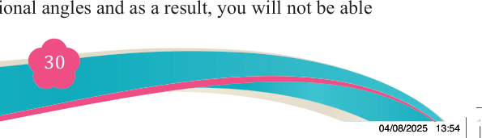
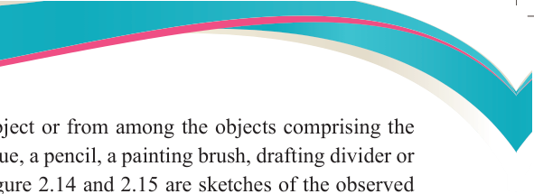
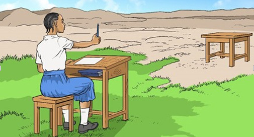
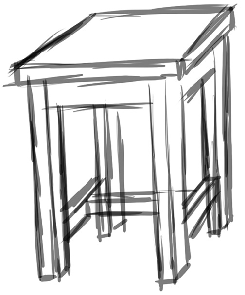
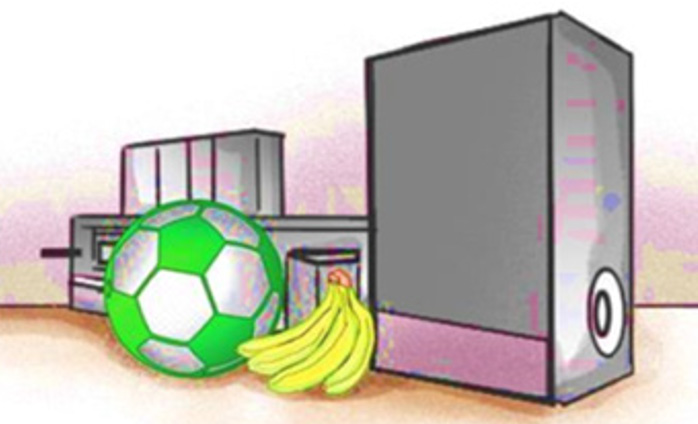
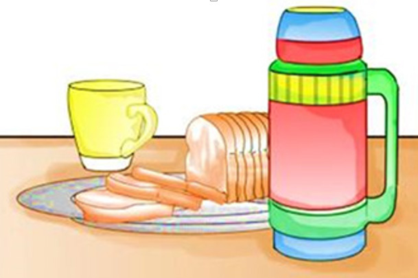

<!DOCTYPE html>
<html lang="en">

<head>
    <meta charset="utf-8" />
    <meta name="viewport" content="width=558, height=768" />
    <title>Fine Art for Secondary Schools</title>
    <meta name="title-id" content="pg036_sec001" />
    <meta name="page-section-id" content="36" />
    <link href="./content/tailwind_output.css" rel="stylesheet">
    <link href="./assets/libs/fontawesome/css/all.min.css" rel="stylesheet">
    <link href="./assets/fonts.css" rel="stylesheet">
    <link rel="preconnect" href="https://fonts.googleapis.com">
    <link rel="preconnect" href="https://fonts.gstatic.com" crossorigin>
    <link href="https://fonts.googleapis.com/css2?family=Caladea&amp;family=Tinos&amp;family=Arimo&amp;display=swap" rel="stylesheet">
    <style>
      html { width: 100%; height: 100%; background: #e5e7eb; }
      body { background: #e5e7eb; }
      #content {
        visibility: hidden;
        background: #fff;
        outline: 1px solid rgba(15, 23, 42, 0.28);
        box-shadow: 0 10px 30px rgba(15, 23, 42, 0.22);
      }
    </style>
    <noscript><style>#content { visibility: visible !important; }</style></noscript>
</head>

<body style="margin:0;overflow:hidden;width:100%;height:100%">
    <main>
      <div id="content" data-fl-reference-width="558" style="position:relative;width:558px;height:768px;margin:0 auto;overflow:hidden">
  
  
  
  
  
  
  
  
  
  
  <p data-id="pg036_p000" data-adt-raster-text="1" data-adt-reading-order="8" data-segments="[{&quot;text&quot;:&quot;Fine Art for Secondary Schools&quot;,&quot;style&quot;:{&quot;font-family&quot;:&quot;Caladea,serif&quot;,&quot;font-size&quot;:&quot;9px&quot;,&quot;color&quot;:&quot;#231f20&quot;}}]" data-adt-fit="1" style="position:absolute;z-index:2;top:49px;left:94px;line-height:9px;width:120px;height:9px;white-space:nowrap;opacity:0"><span style="font-family:Caladea,Merriweather,serif;font-size:9px;color:#231f20">Fine Art for Secondary Schools</span></p>
  
  <p data-id="pg036_p001" data-adt-raster-text="1" data-adt-reading-order="35" data-segments="[{&quot;text&quot;:&quot;30&quot;,&quot;style&quot;:{&quot;font-family&quot;:&quot;Caladea,serif&quot;,&quot;font-size&quot;:&quot;12px&quot;,&quot;color&quot;:&quot;#ffffff&quot;}}]" data-adt-fit="1" style="position:absolute;z-index:2;top:704px;left:268px;line-height:12px;width:13px;height:12px;white-space:nowrap;opacity:0"><span style="font-family:Caladea,Merriweather,serif;font-size:12px;color:#ffffff">30</span></p>
  
  
  <p data-id="pg036_p002" data-adt-raster-text="1" data-adt-reading-order="34" data-segments="[{&quot;text&quot;:&quot;Student&#x2019;s Book&quot;,&quot;style&quot;:{&quot;font-family&quot;:&quot;Tinos,serif&quot;,&quot;font-size&quot;:&quot;9px&quot;,&quot;color&quot;:&quot;#231f20&quot;}},{&quot;text&quot;:&quot; Form &quot;,&quot;style&quot;:{&quot;font-family&quot;:&quot;Tinos,serif&quot;,&quot;font-size&quot;:&quot;9px&quot;,&quot;color&quot;:&quot;#231f20&quot;,&quot;font-weight&quot;:&quot;bold&quot;}},{&quot;text&quot;:&quot;Two&quot;,&quot;style&quot;:{&quot;font-family&quot;:&quot;Tinos,serif&quot;,&quot;font-size&quot;:&quot;9px&quot;,&quot;color&quot;:&quot;#231f20&quot;,&quot;font-weight&quot;:&quot;bold&quot;,&quot;font-style&quot;:&quot;italic&quot;}}]" data-adt-fit="1" style="position:absolute;z-index:2;top:702px;left:94px;line-height:9px;width:97px;height:12px;white-space:nowrap;opacity:0"><span style="font-family:Tinos,&apos;Times New Roman&apos;,Times,Merriweather,serif;font-size:9px;color:#231f20">Student&#x2019;s Book</span><span style="font-family:Tinos,&apos;Times New Roman&apos;,Times,Merriweather,serif;font-size:9px;color:#231f20;font-weight:bold"> Form </span><span style="font-family:Tinos,&apos;Times New Roman&apos;,Times,Merriweather,serif;font-size:9px;color:#231f20;font-weight:bold;font-style:italic">Two</span></p>
  
  <p data-id="pg036_p003" data-adt-reading-order="9" data-segments="[{&quot;text&quot;:&quot;of different parts of the same object or from among the objects comprising the\n&quot;,&quot;style&quot;:{&quot;font-family&quot;:&quot;Tinos,serif&quot;,&quot;font-size&quot;:&quot;12px&quot;,&quot;color&quot;:&quot;#231f20&quot;}},{&quot;text&quot;:&quot;still life. In the sight size technique, a pencil, a painting brush, drafting divider or\n&quot;,&quot;style&quot;:{&quot;font-family&quot;:&quot;Tinos,serif&quot;,&quot;font-size&quot;:&quot;12px&quot;,&quot;color&quot;:&quot;#231f20&quot;}},{&quot;text&quot;:&quot;a similar object can be used. Figure 2.14 and 2.15 are sketches of the observed&quot;,&quot;style&quot;:{&quot;font-family&quot;:&quot;Tinos,serif&quot;,&quot;font-size&quot;:&quot;12px&quot;,&quot;color&quot;:&quot;#231f20&quot;}}]" data-adt-fit="1" style="position:absolute;z-index:2;top:82px;left:86px;line-height:12px;width:389px;height:48px;white-space:pre"><span style="font-family:Tinos,&apos;Times New Roman&apos;,Times,Merriweather,serif;font-size:12px;color:#231f20">of different parts of the same object or from among the objects comprising the
</span><span style="font-family:Tinos,&apos;Times New Roman&apos;,Times,Merriweather,serif;font-size:12px;color:#231f20">still life. In the sight size technique, a pencil, a painting brush, drafting divider or
</span><span style="font-family:Tinos,&apos;Times New Roman&apos;,Times,Merriweather,serif;font-size:12px;color:#231f20">a similar object can be used. Figure 2.14 and 2.15 are sketches of the observed</span></p>
  
  <p data-id="pg036_p006" data-adt-reading-order="10" data-segments="[{&quot;text&quot;:&quot;and measured stool.&quot;,&quot;style&quot;:{&quot;font-family&quot;:&quot;Tinos,serif&quot;,&quot;font-size&quot;:&quot;12px&quot;,&quot;color&quot;:&quot;#231f20&quot;}}]" data-adt-fit="1" style="position:absolute;z-index:2;top:130px;left:86px;line-height:12px;width:389px;height:16px;white-space:nowrap"><span style="font-family:Tinos,&apos;Times New Roman&apos;,Times,Merriweather,serif;font-size:12px;color:#231f20">and measured stool.</span></p>
  
  
  <p data-id="pg036_p007" data-adt-reading-order="13" data-segments="[{&quot;text&quot;:&quot;Figure 2.14: &quot;,&quot;style&quot;:{&quot;font-family&quot;:&quot;Tinos,serif&quot;,&quot;font-size&quot;:&quot;10px&quot;,&quot;color&quot;:&quot;#231f20&quot;,&quot;font-weight&quot;:&quot;bold&quot;}},{&quot;text&quot;:&quot;Measuring objects by sight size technique&quot;,&quot;style&quot;:{&quot;font-family&quot;:&quot;Tinos,serif&quot;,&quot;font-size&quot;:&quot;10px&quot;,&quot;color&quot;:&quot;#231f20&quot;,&quot;font-style&quot;:&quot;italic&quot;}}]" data-adt-fit="1" style="position:absolute;z-index:2;top:309px;left:106px;line-height:10px;width:219px;height:13px;white-space:nowrap"><span style="font-family:Tinos,&apos;Times New Roman&apos;,Times,Merriweather,serif;font-size:10px;color:#231f20;font-weight:bold">Figure 2.14: </span><span style="font-family:Tinos,&apos;Times New Roman&apos;,Times,Merriweather,serif;font-size:10px;color:#231f20;font-style:italic">Measuring objects by sight size technique</span></p>
  <p data-id="pg036_p008" data-adt-reading-order="14" data-segments="[{&quot;text&quot;:&quot;Figure 2.15:&quot;,&quot;style&quot;:{&quot;font-family&quot;:&quot;Tinos,serif&quot;,&quot;font-size&quot;:&quot;10px&quot;,&quot;color&quot;:&quot;#231f20&quot;,&quot;font-weight&quot;:&quot;bold&quot;}},{&quot;text&quot;:&quot; \u0007Sketch of the\n&quot;,&quot;style&quot;:{&quot;font-family&quot;:&quot;Tinos,serif&quot;,&quot;font-size&quot;:&quot;10px&quot;,&quot;color&quot;:&quot;#231f20&quot;,&quot;font-style&quot;:&quot;italic&quot;}},{&quot;text&quot;:&quot;observed and\n&quot;,&quot;style&quot;:{&quot;font-family&quot;:&quot;Tinos,serif&quot;,&quot;font-size&quot;:&quot;10px&quot;,&quot;color&quot;:&quot;#231f20&quot;,&quot;font-style&quot;:&quot;italic&quot;}},{&quot;text&quot;:&quot;measured stool&quot;,&quot;style&quot;:{&quot;font-family&quot;:&quot;Tinos,serif&quot;,&quot;font-size&quot;:&quot;10px&quot;,&quot;color&quot;:&quot;#231f20&quot;,&quot;font-style&quot;:&quot;italic&quot;}}]" data-adt-fit="1" style="position:absolute;z-index:2;top:309px;left:349px;line-height:10px;width:114px;height:37px;white-space:pre"><span style="font-family:Tinos,&apos;Times New Roman&apos;,Times,Merriweather,serif;font-size:10px;color:#231f20;font-weight:bold">Figure 2.15:</span><span style="font-family:Tinos,&apos;Times New Roman&apos;,Times,Merriweather,serif;font-size:10px;color:#231f20;font-style:italic"> Sketch of the
</span><span style="font-family:Tinos,&apos;Times New Roman&apos;,Times,Merriweather,serif;font-size:10px;color:#231f20;font-style:italic">observed and
</span><span style="font-family:Tinos,&apos;Times New Roman&apos;,Times,Merriweather,serif;font-size:10px;color:#231f20;font-style:italic">measured stool</span></p>
  <p data-id="pg036_p011" data-adt-reading-order="15" data-segments="[{&quot;text&quot;:&quot;The width and height of the subject will determine the positioning of your paper;&quot;,&quot;style&quot;:{&quot;font-family&quot;:&quot;Tinos,serif&quot;,&quot;font-size&quot;:&quot;12px&quot;,&quot;color&quot;:&quot;#231f20&quot;}}]" data-adt-fit="1" style="position:absolute;z-index:2;top:364px;left:86px;line-height:12px;width:387px;height:16px;white-space:nowrap;letter-spacing:-0.15px"><span style="font-family:Tinos,&apos;Times New Roman&apos;,Times,Merriweather,serif;font-size:12px;color:#231f20">The width and height of the subject will determine the positioning of your paper;</span></p>
  <p data-id="pg036_p012" data-adt-reading-order="16" data-segments="[{&quot;text&quot;:&quot;whether horizontal (landscape) as in Figure 2.16 or upright (portrait) as in Figure&quot;,&quot;style&quot;:{&quot;font-family&quot;:&quot;Tinos,serif&quot;,&quot;font-size&quot;:&quot;11.990395545959473px&quot;,&quot;color&quot;:&quot;#231f20&quot;}}]" data-adt-fit="1" style="position:absolute;z-index:2;top:380px;left:86px;line-height:12px;width:387px;height:16px;white-space:nowrap;letter-spacing:-0.15px"><span style="font-family:Tinos,&apos;Times New Roman&apos;,Times,Merriweather,serif;font-size:11.990395545959473px;color:#231f20">whether horizontal (landscape) as in Figure 2.16 or upright (portrait) as in Figure</span></p>
  <p data-id="pg036_p013" data-adt-reading-order="17" data-segments="[{&quot;text&quot;:&quot;2.17. If the subject is wider than its height, the painting surface will be in landscape.&quot;,&quot;style&quot;:{&quot;font-family&quot;:&quot;Tinos,serif&quot;,&quot;font-size&quot;:&quot;12px&quot;,&quot;color&quot;:&quot;#231f20&quot;}}]" data-adt-fit="1" style="position:absolute;z-index:2;top:396px;left:86px;line-height:12px;width:387px;height:16px;white-space:nowrap;letter-spacing:-0.15px"><span style="font-family:Tinos,&apos;Times New Roman&apos;,Times,Merriweather,serif;font-size:12px;color:#231f20">2.17. If the subject is wider than its height, the painting surface will be in landscape.</span></p>
  <p data-id="pg036_p014" data-adt-reading-order="18" data-segments="[{&quot;text&quot;:&quot;If the subject is taller than its width, the painting surface will be in portrait. Always&quot;,&quot;style&quot;:{&quot;font-family&quot;:&quot;Tinos,serif&quot;,&quot;font-size&quot;:&quot;11.989045143127441px&quot;,&quot;color&quot;:&quot;#231f20&quot;}}]" data-adt-fit="1" style="position:absolute;z-index:2;top:412px;left:86px;line-height:12px;width:387px;height:16px;white-space:nowrap;letter-spacing:-0.15px"><span style="font-family:Tinos,&apos;Times New Roman&apos;,Times,Merriweather,serif;font-size:11.989045143127441px;color:#231f20">If the subject is taller than its width, the painting surface will be in portrait. Always</span></p>
  <p data-id="pg036_p015" data-adt-reading-order="19" data-segments="[{&quot;text&quot;:&quot;remember to sketch from what you see and not what you know.&quot;,&quot;style&quot;:{&quot;font-family&quot;:&quot;Tinos,serif&quot;,&quot;font-size&quot;:&quot;12px&quot;,&quot;color&quot;:&quot;#231f20&quot;}}]" data-adt-fit="1" style="position:absolute;z-index:2;top:428px;left:86px;line-height:12px;width:387px;height:16px;white-space:nowrap"><span style="font-family:Tinos,&apos;Times New Roman&apos;,Times,Merriweather,serif;font-size:12px;color:#231f20">remember to sketch from what you see and not what you know.</span></p>
  
  
  <p data-id="pg036_p016" data-adt-reading-order="22" data-segments="[{&quot;text&quot;:&quot;Figure 2.16:&quot;,&quot;style&quot;:{&quot;font-family&quot;:&quot;Tinos,serif&quot;,&quot;font-size&quot;:&quot;10px&quot;,&quot;color&quot;:&quot;#231f20&quot;,&quot;font-weight&quot;:&quot;bold&quot;}},{&quot;text&quot;:&quot; \u0007A still life painting in landscape\n&quot;,&quot;style&quot;:{&quot;font-family&quot;:&quot;Tinos,serif&quot;,&quot;font-size&quot;:&quot;10px&quot;,&quot;color&quot;:&quot;#231f20&quot;,&quot;font-style&quot;:&quot;italic&quot;}},{&quot;text&quot;:&quot;position&quot;,&quot;style&quot;:{&quot;font-family&quot;:&quot;Tinos,serif&quot;,&quot;font-size&quot;:&quot;10px&quot;,&quot;color&quot;:&quot;#231f20&quot;,&quot;font-style&quot;:&quot;italic&quot;}}]" data-adt-fit="1" style="position:absolute;z-index:2;top:592px;left:102px;line-height:10px;width:184px;height:29px;white-space:pre"><span style="font-family:Tinos,&apos;Times New Roman&apos;,Times,Merriweather,serif;font-size:10px;color:#231f20;font-weight:bold">Figure 2.16:</span><span style="font-family:Tinos,&apos;Times New Roman&apos;,Times,Merriweather,serif;font-size:10px;color:#231f20;font-style:italic"> A still life painting in landscape
</span><span style="font-family:Tinos,&apos;Times New Roman&apos;,Times,Merriweather,serif;font-size:10px;color:#231f20;font-style:italic">position</span></p>
  <p data-id="pg036_p018" data-adt-reading-order="23" data-segments="[{&quot;text&quot;:&quot;Figure 2.17:&quot;,&quot;style&quot;:{&quot;font-family&quot;:&quot;Tinos,serif&quot;,&quot;font-size&quot;:&quot;10px&quot;,&quot;color&quot;:&quot;#231f20&quot;,&quot;font-weight&quot;:&quot;bold&quot;}},{&quot;text&quot;:&quot; \u0007A still life painting in\n&quot;,&quot;style&quot;:{&quot;font-family&quot;:&quot;Tinos,serif&quot;,&quot;font-size&quot;:&quot;10px&quot;,&quot;color&quot;:&quot;#231f20&quot;,&quot;font-style&quot;:&quot;italic&quot;}},{&quot;text&quot;:&quot;portrait position&quot;,&quot;style&quot;:{&quot;font-family&quot;:&quot;Tinos,serif&quot;,&quot;font-size&quot;:&quot;10px&quot;,&quot;color&quot;:&quot;#231f20&quot;,&quot;font-style&quot;:&quot;italic&quot;}}]" data-adt-fit="1" style="position:absolute;z-index:2;top:592px;left:311px;line-height:10px;width:141px;height:29px;white-space:pre"><span style="font-family:Tinos,&apos;Times New Roman&apos;,Times,Merriweather,serif;font-size:10px;color:#231f20;font-weight:bold">Figure 2.17:</span><span style="font-family:Tinos,&apos;Times New Roman&apos;,Times,Merriweather,serif;font-size:10px;color:#231f20;font-style:italic"> A still life painting in
</span><span style="font-family:Tinos,&apos;Times New Roman&apos;,Times,Merriweather,serif;font-size:10px;color:#231f20;font-style:italic">portrait position</span></p>
  <p data-id="pg036_p020" data-adt-reading-order="24" data-segments="[{&quot;text&quot;:&quot;Once you have started taking measurements of different parts of your objects, do not&quot;,&quot;style&quot;:{&quot;font-family&quot;:&quot;Tinos,serif&quot;,&quot;font-size&quot;:&quot;11.96615219116211px&quot;,&quot;color&quot;:&quot;#231f20&quot;}}]" data-adt-fit="1" style="position:absolute;z-index:2;top:636px;left:86px;line-height:12px;width:387px;height:16px;white-space:nowrap;letter-spacing:-0.15px"><span style="font-family:Tinos,&apos;Times New Roman&apos;,Times,Merriweather,serif;font-size:11.96615219116211px;color:#231f20">Once you have started taking measurements of different parts of your objects, do not</span></p>
  <p data-id="pg036_p021" data-adt-reading-order="25" data-segments="[{&quot;text&quot;:&quot;shift your sitting position, bend forward&quot;,&quot;style&quot;:{&quot;font-family&quot;:&quot;Tinos,serif&quot;,&quot;font-size&quot;:&quot;12px&quot;,&quot;color&quot;:&quot;#231f20&quot;}},{&quot;text&quot;:&quot; &quot;,&quot;style&quot;:{&quot;font-family&quot;:&quot;Tinos,serif&quot;,&quot;font-size&quot;:&quot;12px&quot;,&quot;color&quot;:&quot;#ef4d84&quot;}},{&quot;text&quot;:&quot;or backward&quot;,&quot;style&quot;:{&quot;font-family&quot;:&quot;Tinos,serif&quot;,&quot;font-size&quot;:&quot;12px&quot;,&quot;color&quot;:&quot;#231f20&quot;}},{&quot;text&quot;:&quot; &quot;,&quot;style&quot;:{&quot;font-family&quot;:&quot;Tinos,serif&quot;,&quot;font-size&quot;:&quot;12px&quot;,&quot;color&quot;:&quot;#ef4d84&quot;}},{&quot;text&quot;:&quot;or&quot;,&quot;style&quot;:{&quot;font-family&quot;:&quot;Tinos,serif&quot;,&quot;font-size&quot;:&quot;12px&quot;,&quot;color&quot;:&quot;#231f20&quot;}},{&quot;text&quot;:&quot; &quot;,&quot;style&quot;:{&quot;font-family&quot;:&quot;Tinos,serif&quot;,&quot;font-size&quot;:&quot;12px&quot;,&quot;color&quot;:&quot;#ef4d84&quot;}},{&quot;text&quot;:&quot;tilt yourself left or right.&quot;,&quot;style&quot;:{&quot;font-family&quot;:&quot;Tinos,serif&quot;,&quot;font-size&quot;:&quot;12px&quot;,&quot;color&quot;:&quot;#231f20&quot;}}]" data-adt-fit="1" style="position:absolute;z-index:2;top:652px;left:86px;line-height:12px;width:386px;height:16px;white-space:nowrap"><span style="font-family:Tinos,&apos;Times New Roman&apos;,Times,Merriweather,serif;font-size:12px;color:#231f20">shift your sitting position, bend forward</span><span style="font-family:Tinos,&apos;Times New Roman&apos;,Times,Merriweather,serif;font-size:12px;color:#ef4d84"> </span><span style="font-family:Tinos,&apos;Times New Roman&apos;,Times,Merriweather,serif;font-size:12px;color:#231f20">or backward</span><span style="font-family:Tinos,&apos;Times New Roman&apos;,Times,Merriweather,serif;font-size:12px;color:#ef4d84"> </span><span style="font-family:Tinos,&apos;Times New Roman&apos;,Times,Merriweather,serif;font-size:12px;color:#231f20">or</span><span style="font-family:Tinos,&apos;Times New Roman&apos;,Times,Merriweather,serif;font-size:12px;color:#ef4d84"> </span><span style="font-family:Tinos,&apos;Times New Roman&apos;,Times,Merriweather,serif;font-size:12px;color:#231f20">tilt yourself left or right.</span></p>
  <p data-id="pg036_p022" data-adt-reading-order="32" data-segments="[{&quot;text&quot;:&quot;Doing this will change observational angles and as a result, you will not be able&quot;,&quot;style&quot;:{&quot;font-family&quot;:&quot;Tinos,serif&quot;,&quot;font-size&quot;:&quot;12px&quot;,&quot;color&quot;:&quot;#231f20&quot;}}]" data-adt-fit="1" style="position:absolute;z-index:2;top:668px;left:86px;line-height:12px;width:386px;height:16px;white-space:nowrap;letter-spacing:-0.15px"><span style="font-family:Tinos,&apos;Times New Roman&apos;,Times,Merriweather,serif;font-size:12px;color:#231f20">Doing this will change observational angles and as a result, you will not be able</span></p>
  <p data-id="pg036_p024" data-adt-raster-text="1" data-adt-reading-order="37" data-segments="[{&quot;text&quot;:&quot;04/08/2025 13:54&quot;,&quot;style&quot;:{&quot;font-family&quot;:&quot;Arimo,serif&quot;,&quot;font-size&quot;:&quot;6px&quot;,&quot;color&quot;:&quot;#ffffff&quot;}}]" data-adt-fit="1" style="position:absolute;z-index:2;top:746px;left:474px;line-height:6px;width:48px;height:6px;white-space:nowrap;opacity:0"><span style="font-family:Arimo,Arial,Helvetica,Merriweather,sans-serif;font-size:6px;color:#ffffff">04/08/2025 13:54</span></p>
<script src="./assets/auto-fit.js"></script>
</div>
    </main>
    <script>
      (function () {
        var c = document.getElementById("content");
        if (!c) return;
        var W = parseFloat(c.style.width) || c.offsetWidth || 1;
        var H = parseFloat(c.style.height) || c.offsetHeight || 1;
        var ref = parseFloat(c.getAttribute("data-fl-reference-width"));
        var refW = ref > 0 ? ref : W;
        var FALLBACK = 96;
        function dock() {
          var v = parseFloat(getComputedStyle(document.documentElement).getPropertyValue("--dock-height"));
          return v > 0 ? v : FALLBACK;
        }
        function fit() {
          var DOCK = dock();
          var byW = window.innerWidth / refW;
          var byH = (window.innerHeight - DOCK) / H;
          var s = Math.min(2, byW, byH > 0 ? byH : byW);
          c.style.position = "absolute";
          c.style.left = "50%";
          c.style.top = "calc((100% - " + DOCK + "px) / 2)";
          c.style.margin = "0";
          c.style.transformOrigin = "center center";
          c.style.transform = "translate(-50%, -50%) scale(" + s + ")";
          c.style.visibility = "visible";
        }
        fit();
        window.addEventListener("resize", fit);
        window.addEventListener("load", fit);
        window.addEventListener("adt:dock-resize", fit);
      })();
    </script>

    <div class="relative z-50" id="interface-container"></div>
    <div class="relative z-50" id="nav-container"></div>
    <script src="./assets/offline-preloader.js"></script>
    <script src="./assets/scorm.js"></script>
    <script src="./assets/base.bundle.local.js"></script>
</body>

</html>
